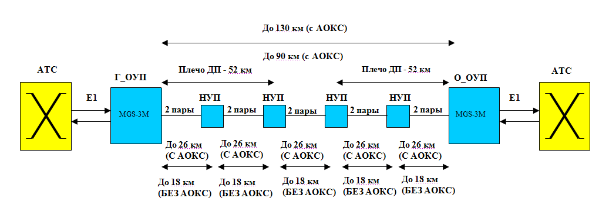
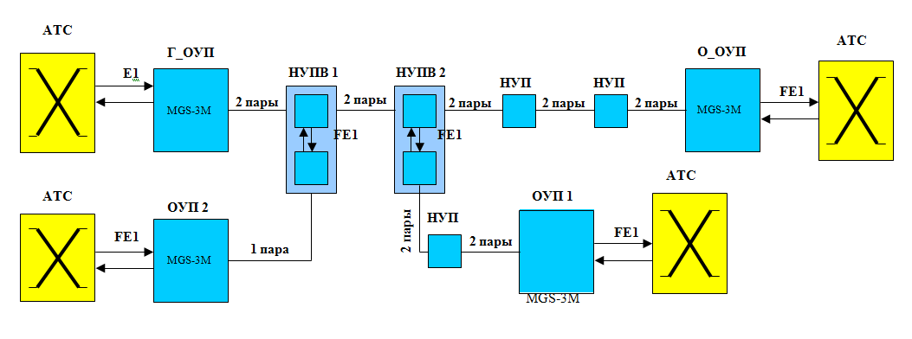

Тема №7. Устройство цифровых систем телекоммуникаций
Занятие№1 Общие сведения об аппаратуре комплекса цифровых систем передачи «Megatrans-3M(4М)».
Учебные вопросы:
Литература:
- Многоканальные системы передачи (часть 2). Учебно-методическое пособие «Аппаратура МКСП с ЧРК». – Мн.: БГУИР, 2010.
- Учебно-наглядное пособие «Альбом схем аппаратуры МКСП». – Мн.: БГУИР, 2010.
- Касанин С.Н., Дюжов Г.Ю. Субботин С.Г. Методическое руководство «Цифровая система передачи MEGATRANS-3M». – Мн., БГУИР, 2010.
1. Назначение и общие сведения о системе «Megatrans-3M(4М)».
MEGATRANS-3M (далее ? СИСТЕМА) предназначена для передачи цифрового сигнала со скоростью до 2,3 Mбит/с по некоммутируемым неуплотненным физическим кабельным линиям связи (преимущественно по симметричным высокочастотным одно- и многочетверочным кабелям типа ЗКП или МКС по однокабельной или двухкабельной схеме связи), а также для организации каналов диспетчерской, радиокабельной, технологической (для систем телемеханики) связи. Система может применяться как в составе первичных цифровых систем передачи, цифровые стыки которых отвечают требованиям МСЭ-Т, так и в качестве самостоятельного оборудования (например, для организации цифровых трактов). Аппаратура обеспечивает возможность выделения, вставки и разветвления каналов в регенерационном пункте.
Аппаратура включает в себя станционное оборудование линейного окончания (комплекты головного и оконечного ОУП), линейное промежуточное регенерационное оборудование (комплекты для установки в НУП и НУПВ), вспомогательное регенерационное оборудование, оборудование передачи телеметрической информации и групповых каналов передачи данных (ПД) телеметрии и телемеханики (ТМ), а также модули контроля и управления. Станционное оборудование линейного окончания предназначено для образования линейного сигнала из цифрового потока со скоростью передачи до 2,3 Мбит/с, дополнительного цифрового канала для каналов ПД ТМ, диспетчерской и радиосвязи, а также для организации дистанционного питания промежуточных линейных регенераторов. Линейное промежуточное регенерационное оборудование предназначено для регенерации линейного сигнала и выделения части канальных интервалов 64 кбит/с дополнительного цифрового канала. Регенерационное оборудование устанавливается в необслуживаемых регенерационных (усилительных) пунктах (НРП (НУП) и НРПВ (НУПВ)). В состав оборудования входят контейнер НРП и модули регенератора. В зависимости от варианта исполнения, регенератор состоит из одного или двух комплектов модулей приемопередатчика и линейного интерфейса.
Вспомогательное регенерационное оборудование предназначено для передачи дополнительного цифрового канала из НРПВ в сторону Пунктов Контроля и Управления (ПКУ), а также маршрутизации/суммирования каналов ПД, ТМ, ДС и РС. Вспомогательное регенерационное оборудование устанавливается в НРПВ в непосредственной близости от основного регенераторного оборудования системы. Оборудование передачи телеметрической информации и групповых каналов предназначено для образования и регенерации сигнала дополнительного цифрового канала из сигналов каналов ПД, ТМ, ДС и РС, а также для организации дистанционного питания вспомогательного регенерационного оборудования. Оборудование передачи телеметрической информации и групповых каналов устанавливается в ПКУ. Модуль контроля и управления CMU, устанавливаемый в станционное оборудование, предназначен для диагностики и управления системой по протоколу SNMP. Модуль СМU собирает информацию об оборудовании, накапливает ее и, при получении соответствующего запроса, выдает на управляющий компьютер. Обмен информацией между модулем CMU и другими устройствами осуществляется по интерфейсу RS485. Питание станционного оборудования линейного окончания осуществляется от первичного источника постоянного тока с номинальным напряжением 60В постоянного тока с заземленным плюсом. Питание оборудования передачи телеметрической информации и групповых каналов производится либо от местного источника гарантированного питания постоянного (60 В) или переменного (220 В) тока. Питание линейных регенераторов производится дистанционно от станционного оборудования линейного окончания. Питание вспомогательного регенерационного оборудования производится дистанционно постоянным напряжением от оконечного оборудования. Станционное оборудование и оборудование передачи телеметрической информации и групповых каналов предназначено для эксплуатации в помещениях в условиях: температуры окружающего воздуха от ?5 до +450С; относительной влажности воздуха 95% при +250С. Линейное и вспомогательное регенерационное оборудование предназначено для эксплуатации в условиях:
температуры окружающего воздуха от ?40 до +550С;
относительной влажности воздуха 95% при +250С.
Рис. 1.1 Пример организации тракта на оборудовании MEGATRANS-3M
Рис. 1.2 Пример организации тракта с ответвлением на оборудовании MEGATRANS-3M
Обозначения на рис . 1.1 … рис . 1.2:
E1
Структурированный 2048 кбит / с согласно ITU-T G.704 цифровой поток
FXO (Foreign eXchange Office)
Двухпроводный аналоговый интерфейс, предназначенный для включения в абонентские комплекты на АТС. Имитирует работу телефонного аппарата.
FXS (Foreign eXchange Subscriber)
Двухпроводный аналоговый интерфейс, предназначенный для подключения телефонного аппарата. Имитирует работу АТС .
VF (Voice Frequency – тональная частота)
Международное обозначение канала тональной частоты, т.е. канала с полосой 0,3 – 3,4 кГц .
АОКС Аналоговая Обработка и Коррекция Сигнала
Алгоритм позволяющий достичь максимально возможной, длины регенерационного участка.
АТС – Автоматическая Телефонная Станция
БРС – Базовая Радиостанция
ДП – Дистанционное Питание
НУПВ – Необслуживаемый Усилительный Пункт с выделением
НУП – Необслуживаемый Усилительный Пункт
Г _ ОУП – Головной Обслуживаемый Усилительный Пункт
О _ ОУП – Оконечный Обслуживаемый Усилительный Пункт
ОУП – Обслуживаемый Усилительный Пункт
ПД – Передача Данных
ПКУ – Пункт Контроля и Управления
СС – Служебная Связь
ТМ – Телемеханика
ЦСП – Цифровые Системы Передачи
ТЧ – Тональная Частота ( Аналогично VF)
2. Основные особенности и состав оборудования системы «Megatrans-3M(4М)».
2.1 Основные особенности системы MEGATRANS-3M
1. Система передачи является следующим поколением магистральных систем MEGATRANS и имеет следующие отличительные особенности, относительно предыдущих поколений систем MEGATRANS:
1. Тип линейного кодирования – ТС-РАМ (РАМ-16).
2. Применение новой элементной базы.
3. Благодаря оптимизированному алгоритму Аналоговой Обработки и Коррекции Сигнала (АОКС), максимальная длина регенерационного участка увеличена до 26 км.
4. Два дистанционно питаемых регенератора с одной стороны (или четыре при питании с двух сторон).
5. Максимальная длина полусекции ДП составляет 52 км, максимальная длина тракта между обслуживаемыми пунктами – 130 км (против 40 км).
6. Уменьшены габаритные размеры регенератора.
7. Различные варианты исполнения регенераторного оборудования:
герметичный корпус на 4 посадочных места (против 3-х) для размещения оборудования регенерации на две системы передачи (два регенератора в одном корпусе, против одного в предыдущих системах);
корпус класса IP-67 для размещения комплекта регенераторного оборудования на одну систему.
8. Возможность выделения-вставки части канальных интервалов в точке регенерации через интерфейс Е1 или xDSL.
9. Возможность подключения трех датчиков «сухих контактов» при использовании одной системы и пяти датчиков, при использовании двух систем в одном конструктиве.
10. Возможность организации каналов диспетчерской связи, каналов радиосвязи и канала передачи данных для оборудования телеметрии и телемеханики и доступом к вышеперечисленным каналам на каждом ПКУ.
11. Общая система управления всех блоков системы.
12. Возможность программного понижения уровня передачи для улучшения спектральной совместимости с аналоговыми системами в случае «врезки» системы MEGATRANS-3M на участке между двумя НУП системы К-60.
13. Организация транзитного управления через ОУП (дополнительная опция) и централизованная система управления.
2.2 Состав оборудования
Таблица 1.1 Состав оборудования
Станционное оборудование |
|
MGS-3M-MRL-E1B/Eth |
Модуль MEGATRANS-3M, MiniRack, LTU, 1*xDSL, без АОКС, 1*E1 120 Ом, ЛП/ДП, в комплекте с кабелем питания,кабелем Ethernet, разъемом для кабеля G.703 и кабелем DSL. |
MGS-3M-SRL-E1B/Eth |
Модуль MEGATRANS-3M, SubRack, LTU, 1*xDSL, без АОКС, 1*E1 120 Ом, ЛП/ДП, в комплекте с разъемом для кабеля G.703 и кабелем DSL. |
MGS-3M-ASP |
Модуль АОКС для установки на модуль MGS-3M-MRL- E1B/Eth или MGS-3M-SRL-E1B/Eth. |
Регенераторное оборудование |
|
MGS-3-CASE-IP2 |
Влагозащищенный корпус регенератора класса IP-67 для оборудования MEGATRANS-3M(3L). 2 посадочных места. |
MGS-3M-RG-XCVR-E |
Плата приёмопередатчика для установки в регенератор MEGATRANS-3M, 2*xDSL, 1*E1 120 Ом ADD-DROP, REMO, прием ДП |
MGS-3-CASE-ST |
Стальной герметичный корпус для регенераторов FlexDSL или MEGATRANS-3M(3L), на 4 платы. |
MGS-3M-RG-LIU |
Стальной герметичный корпус для регенераторов FlexDSL или MEGATRANS-3M(3L), на 4 платы. |
Система состоит из двух комплектов модулей для установки в ОУП и регенераторов. Модули для установки в ОУП в исполнении Sub-Rack размещаются в модульной кассете. Модули в исполнении MiniRack размещаются в 19”стойке или шкафу. В комплект оборудования для передачи одного потока Е1 для ОУП входят:
модульная кассета FG-R-PCM/W-E (FG-R-W-E) для размещения в ней модулей системы;
плата приемопередатчика MGS-3M-SRL-E1B/ETH или модуль приемопередатчика MGS-3M-MRL-E1B/ETH.
При необходимости на плату приёмопередатчика устанавливается модуль АОКС MGS-3M-ASP. Регенератор представляет собой герметичный корпус MGS-3-CASE-ST или влагозащищенный корпус регенератора класса IP-67 MGS-3-CASE-IP2, в который устанавливается комплект из платы приемопередатчика MGS-3M-RG-XCVR-E и платы линейного интерфейса MGS-3M-RG-LIU. При необходимости (при организации передачи двух потоков) в корпус MGS-3-CASE-ST может быть установлен второй комплект плат.
3. Основные технические характеристики системы «Megatrans-3M(4М)».
3.1 Линейный стык
Таблица 1.2 Характеристики линейного стыка
Параметр |
Значение |
Примечание |
Стандарт (кодирование PAM) |
ITU-T G.991.2; ETSI TS 101 524 |
|
Тип кабеля |
Симметричные кабели проводной связи |
Возможно применение на любых симметричных кабелях связи |
Рекомендуемый диаметр жилы кабеля |
0,9 - 1,2 мм (ЗКП1?4?1,2; МКС1?4?1,2 и МКС4?4?1,2) |
|
Число пар |
2 |
|
Спектральная плотность выходного сигнала (дБ/Гц) в рабочей полосе частот, не более |
Согласно стандарту передачи |
|
Спектральная плотность выходного сигнала вне рабочей полосы частот |
Согласно стандарту передачи |
|
Характеристика импеданса |
Согласованная с кабелем марки МКСБ-4?4?1,2 |
Возможна настройка под любой тип кабеля |
Физическая модель линии |
Соответствует участку кабеля МКСБ ?4?1,2 с затуханием 64 дБ на частоте 250 кГц. |
3.2 Типовые требования к кабельному участку
Таблица 1.3 Типовые требования к кабельному участку
Параметр |
Значение |
Примечание |
||
Перекрываемое затухание одного регенерационного участка (А раб.), дБ, на частоте |
150 кГц |
250 кГц |
400 кГц |
При скорости передачи кбит/с и коэффициенте ошибок (в графе указана скорость передачи для линейного кодирования PAM16) |
36 |
46 |
59 |
2064<1E-10 (без.АОКС) |
|
51 |
66 |
80 |
2064 <1E-10 (с АОКС) |
|
Ёмкость пары на частоте 800 Гц, нФ, не более |
450 630 |
А раб.< 36 дБ (150 кГц) А раб.< 50 дБ (150 кГц) |
||
Допустимая емкостная асимметрия пары, %, не более. |
0,2 1 |
А раб.> 36 дБ (150 кГц) А раб.< 36 дБ (150 кГц) |
||
Сопротивление пары кабеля, Ом, не более |
500 580 700 800 |
А раб.< 31 дБ (150 кГц) А раб.< 36 дБ (150 кГц) А раб.< 44 дБ (150 кГц) А раб.< 50 дБ (150 кГц) |
||
Допустимая омическая асимметрия пары, %, не более. |
0,2 1 |
А раб.> 36 дБ (150 кГц) А раб.< 36 дБ (150 кГц) |
||
Коэффициент продольного затухания в диапазоне частот 10 – 400 кГц, дБ, не менее |
50 |
|||
Переходное затухание на ближнем конце в диапазоне частот 10 – 400 кГц, дБ, не менее |
54 |
|||
Переходное затухание на дальнем конце в диапазоне частот 10 – 400 кГц, дБ, не менее |
63 |
|||
Мощность шумов в паре на стороне приемника в диапазоне частот 320 Гц- 1500 кГц, дБ, не более |
57 47 |
А раб.> 36 дБ (150 кГц) А раб.< 36 дБ (150 кГц) |
||
Спектральная плотность шумов в диапазоне частот 10 – 1500 кГц, дБ/кГц, не более |
–160 –150 |
А раб.> 36 дБ (150 кГц) А раб.< 36 дБ (150 кГц) |
||
Амплитуда импульсов помех на стороне приёмника, мВ, не более |
15 |
Т спада пл. верш.: >1 мкс |
||
Сопротивление изоляции, МОм, не менее |
560 |
|||
3.3 Сетевой стык E1
Таблица 1.4 Характеристики сетевого стыка E1
Параметр |
Значение |
Стандарт |
МСЭ-Т G.703 |
Скорость передачи в каждом направлении, кбит/с |
2048 (1 ± 50.10-6) |
Код |
HDB3 |
Импеданс |
120 Ом |
Номинальное пиковое напряжение посылки (импульса) |
3 В |
Пиковое напряжение пробела (при отсутствии импульса) |
(0 ± 0,3) В |
Маска импульса на передаче |
Согласно Рек. G.703, рис. 15/G.703 |
Номинальная длительность импульса, нс |
244 |
Отношение амплитуд положительных и отрицательных импульсов |
0,95-1,05 |
Затухание отражения входной цепи относительно номинального сопротивления, дБ, в диапазоне, не менее |
от 51 до 102 кГц: 12 от 102 до 2048 кГц: 18 от 2048 до 3072 кГц: 14 |
Допустимая величина дрожания фазы на входе |
Согласно маске п.3 Рек. G.823. |
Максимальное дрожание фазы на выходе |
Согласно п.2 Рек. G.823 |
Предельно допустимые отклонения тактовой частоты входного сигнала, Гц, |
± 100 |
Пределы затухания линии на частоте 1024 кГц, дБ |
0 … 6 |
Кадрирование |
Отсутствует или по МСЭ-Т G.704 |
Защита от перенапряжений |
Приложение. В к Рек. G.703 (общий метод с использованием импульсного генератора по схеме рис. В-2/G.703 и U=100 В постоянного тока). |
3.4 Стык управления
Таблица 1.5 Характеристики стыка управления
Параметр |
Значение |
Стык |
МСЭ-Т V.24/V.28 (RS232), АКД (DCE) |
Режим эмуляции терминала |
VT100 |
Скорость/Формат передачи |
9600 бит/с / 8-N-1, асинхронный |
3.5 Электропитание оборудования линейного окончания
Таблица 1.6 Электропитание оконечного оборудования
Параметр |
Значение |
Примечание |
Диапазон входного напряжения постоянного тока |
Локальное питание: ?38…?72 В |
|
Диапазон входного напряжения переменного тока |
220 В ± 15%, 40..60 Гц |
|
Максимальная потребляемая мощность модуля LTU с ДП: в режиме 115 В в режиме 200 В |
? 12,1 Вт; ? 19,5 Вт |
|
Допустимое напряжение помех первичного источника, В, в диапазоне: |
от 0 до 300 Гц: 0,25 от 300 Гц до 20 кГц: 0,015 от 20 – 150 кГц: 0,0025 |
Псофометрическое напряжение помех, Впсоф, не более 0,005 |
Допустимые броски напряжения на вводах первичного питания аппаратуры |
±20% от номинального значения, длительностью 0,4 с; ±40% от номинального значения, длительностью 0,005с. |
В остальных случаях занижения или пропадания напряжения на вводах аппаратуры после его восстановления аппаратура автоматически восстанавливает заданные параметры без вмешательства обслуживающего персонала через 40 с. |
Напряжение помех, создаваемое аппаратурой на вводах первичного электропитания, В, при номинальном напряжении, в диапазоне, не более: |
от 0 до 300 Гц: 0,25 от 300 Гц до 20 кГц: 0,015 от 20 кГц до 150 кГц: 0,0025 |
Псофометрическое напряжение помех не превышает 0,002 Впсоф. |
3.6 Климатические условия
Оборудование линейного окончания предназначено для эксплуатации в помещениях в условиях:
температуры окружающего воздуха от –5 до +45°С;
относительной влажности воздуха 95% при +25°С.
Регенерационное оборудование предназначено для эксплуатации в условиях:
температуры окружающего воздуха от –40 до +55°С;
относительной влажности воздуха 95% при +25°С.
Аппаратура сохраняет заявленные характеристики при понижении атмосферного давления до 60 кПа (450 мм.рт.ст.).
Условия хранения: температура окружающей среды: от – 50 до +50°С.
Аппаратура допускает перевозку авиатранспортом, т.е. выдерживает воздействие пониженного атмосферного давления 12 кПа (90 мм.рт.ст.) при температуре минус 50 °С.
3.7 Надежность
Среднее время наработки на отказ одного комплекта, состоящего из комплекта оборудования линейного окончания и регенератора, составляет не менее 30 тыс. часов. Срок службы аппаратуры составляет не менее 20 лет.
3.8 Требования к заземлению
Металлоконструкции, в которые монтируется модульная кассета или регенератор, должны быть надежно заземлены (сопротивление заземления не должно превышать10 Ом). Эксплуатация изделий без подключения заземления категорически запрещена!
Управляющий компьютер должен быть обязательно заземлен через тот же контур заземления, что и модульная кассета.